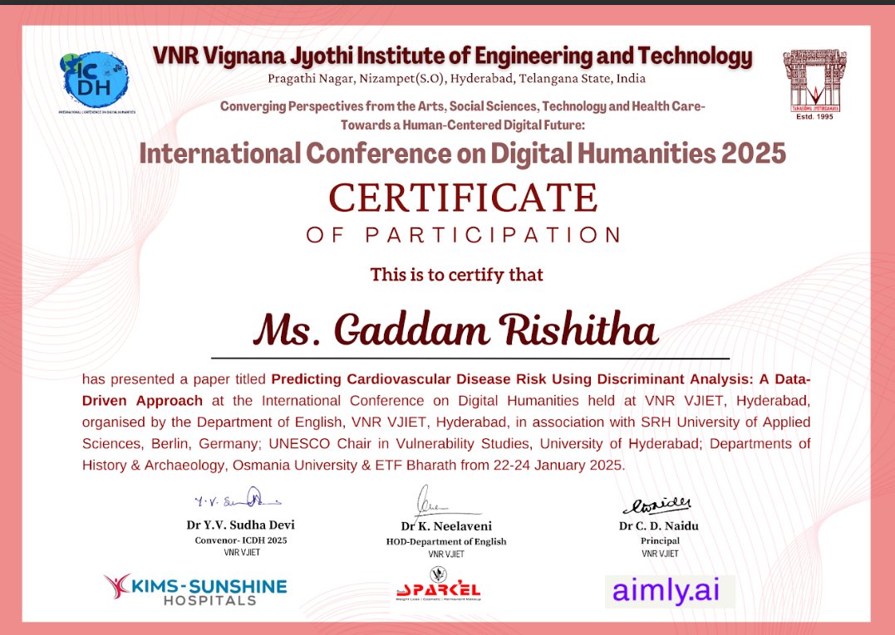

My Professional Experience
Software Development Intern - Bharat Intern
Developed web applications using MERN stack, enhanced UI/UX, and optimized performance.

Backend Developer - Internpe
Worked on Java and Node.js for seamless backend integration and database optimization.

Hackathon Participant - Hack4SDG
Built an innovative umbrella rental system, solving real-world challenges using web technologies.

Research Presenter - International Conference
Presented research on predicting cardiac attacks using Machine Learning and Discriminant Analysis.
Cybersecurity Training - Cyber Suraksha
Completed a 40-hour course by Tata STRIVE & Microsoft, gaining foundational cybersecurity knowledge.